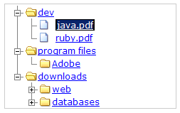

Package org.apache.click.extras.tree
Class Tree
java.lang.Object
org.apache.click.control.AbstractControl
org.apache.click.extras.tree.Tree
- All Implemented Interfaces:
Serializable,Control
- Direct Known Subclasses:
CheckboxTree
Provides a tree control for displaying hierarchical data. The tree operates
on a hierarchy of
TreeNode's. Each TreeNode must provide a
uniquely identified node in the hierarchy.
Below is a screenshot of the tree in action.
|  |
Tree Example
An example tree usage is provided below (this code was used to produce the screenshot):
public class PlainTreePage extends BorderPage {
public PlainTreePage() {
Tree tree = buildTree();
addControl(tree);
}
// This method creates a representation of a Windows OS directory.
public Tree buildTree() {
Tree tree = new Tree("tree");
// Create a node representing the root directory with the specified
// parameter as the value. Because an id is not specified, a random
// one will be generated by the node. By default the root node is
// not rendered by the tree. This can be changed by calling
// tree.setRootNodeDisplayed(true).
TreeNode root = new TreeNode("c:");
// Create a new directory, setting the root directory as its parent. Here
// we do specify a id as the 2nd argument, so no id is generated.
TreeNode dev = new TreeNode("dev","1", root);
// The following two nodes represent files in the directory.
// The false argument to the constructor below means that these nodes
// does not support child nodes. Makes sense since files cannot contain
// directories or other files
new TreeNode("java.pdf", "2", dev, false);
new TreeNode("ruby.pdf", "3", dev, false);
TreeNode programFiles = new TreeNode("program files", "4", root);
TreeNode adobe = new TreeNode("Adobe", "5", programFiles);
TreeNode download = new TreeNode("downloads","6", root);
TreeNode web = new TreeNode("web", "7", download);
new TreeNode("html.pdf", "8", web);
new TreeNode("css.html", "9", web);
TreeNode databases = new TreeNode("databases", "10", download);
new TreeNode("mysql.html","11",databases);
new TreeNode("oracle.pdf","12",databases);
new TreeNode("postgres","13",databases);
tree.setRootNode(root);
return tree;
}
}
CSS and JavaScript resources
The Tree control makes use of the following resources (which Click automatically deploys to the application directory,/click/tree):
click/tree/tree.cssclick/tree/tree.jsclick/tree/cookie-helper.js
<html> <head> $headElements </head> <body> $tree $jsElements </body> </html>
Tree customization
The following list of stylesheet classes are used to render the tree icons. One can easily change thetree.css to use a different set of
icons. Note: all CSS classes are set inline in <span> elements.
- <span class="leafIcon"> - renders the leaf node of the tree
- <span class="expandedIcon"> - renders the expanded state of a node
- <span class="collapsedIcon"> - renders the collapsed state of a node
- images/folder-closed.png
- images/folder-open.png
- images/item.png
- See Also:
-
Nested Class Summary
Nested ClassesModifier and TypeClassDescriptionprotected classPlease note this class is not meant for public use.protected static interfaceProvides a TreeNode callback interface.protected classPlease note this class is only meant for developers of this control, not users.protected classPlease note this class is only meant for developers of this control, not users.protected static interfacePlease note this class is not meant for public use.protected static interfacePlease note this class is not meant for public use.protected classPlease note this class is only meant for developers of this control, not users.protected classPlease note this class is only meant for developers of this control, not users. -
Field Summary
FieldsModifier and TypeFieldDescriptionprotected static final StringThe tree's collapsed icon name:"collapsedIcon".protected static final StringThe tree's expand icon name:"expandedIcon".static final StringThe tree's expand/collapse parameter name:"expandTreeNode".protected ActionLinkThe tree node expand / collapse link.protected String[]Array of ids that must be expanded or collapsed.static final intIndicator for using cookies to implement client side behavior.static final intIndicator for using the session to implement client side behavior.protected Tree.JavascriptHandlerKeep track of node id's, as they are selected, deselected, expanded and collapsed.protected static final StringThe tree's leaf icon name:"leafIcon".protected TreeNodeThe tree's hierarchical data model.static final StringThe tree's select/deselect parameter name:"selectTreeNode".protected ActionLinkThe Tree node select / deselect link.protected String[]Array of ids that must be selected or deselected.Fields inherited from class org.apache.click.control.AbstractControl
actionListener, attributes, behaviors, headElements, listener, listenerMethod, messages, name, parent, stylesFields inherited from interface org.apache.click.Control
CONTROL_MESSAGES -
Constructor Summary
Constructors -
Method Summary
Modifier and TypeMethodDescriptionvoidaddListener(TreeListener listener) Adds the listener to start receiving tree events.voidThis method binds the users request of expanded and collapsed nodes to the tree's nodes.voidThis method binds any expand/collapse and select/deselect changes from the request parameters.voidThis method binds the users request of selected nodes to the tree's nodes.voidUtility method that force the Tree to remove any entries it made in the HttpSession.voidCollapse the node with matching id and inform any listeners of the change.voidCollapse the node and inform any listeners of the change.voidCollapse all the nodes of the tree and inform any listeners of the change.protected Tree.JavascriptHandlercreateJavascriptHandler(int javascriptPolicy) Creates a new JavascriptHandler based on the specified policy.voidDeselect the node with matching id and inform any listeners of the change.voidDeselect the node and inform any listeners of the change.voidDeselect all the nodes of the tree and inform any listeners of the change.voidExpand the node with matching id and inform any listeners of the change.voidExpand the node and inform any listeners of the change.voidExpand all the nodes of the tree and inform any listeners of the change.protected voidexpandOrCollapse(String[] ids) Swaps the expand state of all TreeNodes with specified id's.Finds and returns the first node that matches the id.protected TreeNodeFinds and returns the first node that matches the id, starting the search from the specified node.protected voidfireNodeCollapsed(TreeNode node, boolean previousState) Notifies all listeners currently registered with the tree, about any collapse events.protected voidfireNodeDeselected(TreeNode node, boolean previousState) Notifies all listeners currently registered with the tree, about any deselection events.protected voidfireNodeExpanded(TreeNode node, boolean previousState) Notifies all listeners currently registered with the tree, about any expand events.protected voidfireNodeSelected(TreeNode node, boolean previousState) Notifies all listeners currently registered with the tree, about any selection events.intGet the tree's decorator.protected StringgetExpandClass(TreeNode treeNode) Query the specified treeNode and check which css class to apply.getExpandedNodes(boolean includeInvisibleNodes) Returns all the nodes that were expanded.Return the tree node expand / collapse link.Return the Tree HTML HEAD elements for the following resources:Return the CSS "height" style of the tree, or null if not defined.protected StringReturn an anchor <a> tag href attribute for the given parameters.protected StringgetIconClass(TreeNode treeNode) Query the specified treeNode and check which css class to apply for the icons.protected StringgetRequestValue(String name) Returns the value of the specified named parameter or a empty string "" if not found.protected String[]getRequestValues(String name) Returns an array of all values of the specified named parameter or null if the parameter does not exist.Return the tree's root TreeNode.getSelectedNodes(boolean includeInvisibleNodes) Returns all the nodes that were selected.Return the tree node select / deselect link.getWidth()Return the CSS "width" style attribute of the tree, or null if not defined.booleanReturn if tree has a root node.protected booleanisExpandedParent(TreeNode treeNode) Helper method indicating if the specified node is both expanded and has at least 1 child node.booleanReturns if javascript functionality are enabled or not.booleanQuery if the tree will notify its tree listeners of any change to the tree's model.booleanReturn if the tree's root node should be displayed or not.iterator()Returns an iterator over all the nodes.Returns an iterator over all nodes starting from the specified node.voidThis method cleans up theexpandLinkandselectLink.booleanProcesses user request to change state of the tree.protected voidprocessNodes(String[] ids, Tree.Callback callback) Provides callback functionality for all the specified nodes.protected voidprocessNodes(Collection<TreeNode> nodes, Tree.Callback callback) Provides callback functionality for all the specified nodes.voidremoveListener(TreeListener listener) Removes the listener to stop receiving tree events.voidrender(HtmlStringBuffer buffer) Render the HTML representation of the tree.protected voidrenderExpandAndCollapseAction(HtmlStringBuffer buffer, TreeNode treeNode) Render the expand and collapse action of the tree.protected voidrenderIcon(HtmlStringBuffer buffer, TreeNode treeNode) Render the node's icon depending on the current state of the node.protected voidrenderTree(HtmlStringBuffer buffer, TreeNode treeNode, int indentation) Render the children of the specified tree node as html markup and append the output to the specified buffer.protected voidrenderTreeNode(HtmlStringBuffer buffer, TreeNode treeNode, int indentation) Render the specified treeNode.protected voidrenderTreeNodeEnd(HtmlStringBuffer buffer, TreeNode treeNode, int indentation) Interception point to render html after the tree node was rendered.protected voidrenderTreeNodeStart(HtmlStringBuffer buffer, TreeNode treeNode, int indentation) Interception point to render html before the tree node is rendered.protected voidrenderValue(HtmlStringBuffer buffer, TreeNode treeNode) Render the node's value.voidSelect the node with matching id and inform any listeners of the change.voidSelect the node and inform any listeners of the change.voidSelect all the nodes of the tree and inform any listeners of the change.protected voidselectOrDeselect(String[] ids) Swaps the select state of all TreeNodes with specified id's to the new value.voidsetActionListener(ActionListener listener) Set the control's action listener.voidsetDecorator(Decorator decorator) Set the tree's decorator which enables a interception point for users to render the tree nodes.protected voidsetExpandState(String id, boolean newValue) Sets the expand state of the TreeNode with specified id to the new value.protected voidsetExpandState(Collection<TreeNode> nodes, boolean newValue) Sets the TreeNode expand state of each node in the specified collection to the new value.protected voidsetExpandState(TreeNode node, boolean newValue) Sets the TreeNode expand state to the new value.voidSet the the CSS "height" style attribute of the tree.voidsetJavascriptEnabled(boolean newValue) Enables javascript functionality.voidsetJavascriptEnabled(boolean newValue, int javascriptPolicy) OverloadssetJavascriptEnabled(boolean).voidsetListener(Object listener, String method) Set the controls event listener.voidvoidsetNotifyListeners(boolean notifyListeners) Enable or disable if the tree will notify its tree listeners of any change to the tree's model.voidsetRootNode(TreeNode rootNode) Set the tree's root TreeNode.voidsetRootNodeDisplayed(boolean rootNodeDisplayed) Sets whether the tree's root node should be displayed or not.protected voidsetSelectState(String id, boolean newValue) Sets the select state of the TreeNode with specified id to the new value.protected voidsetSelectState(Collection<TreeNode> nodes, boolean newValue) Sets the TreeNode select state of each node in the specified collection to the new value.protected voidsetSelectState(TreeNode node, boolean newValue) Sets the TreeNode select state to the new value.voidSet the the CSS "width" style attribute of the tree.protected booleanshouldRenderChildren(TreeNode treeNode) Check the state of the specified node if its children should be rendered or not.toString()Return a HTML rendered Tree string of all the tree's nodes.Methods inherited from class org.apache.click.control.AbstractControl
addBehavior, addStyleClass, appendAttributes, dispatchActionEvent, getActionListener, getAttribute, getAttributes, getBehaviors, getContext, getHtmlImports, getId, getMessage, getMessage, getMessages, getName, getPage, getParent, getStyle, getStyles, getTag, hasAttribute, hasAttributes, hasBehaviors, hasStyles, isAjaxTarget, onDeploy, onInit, onRender, removeBehavior, removeStyleClass, renderTagBegin, renderTagEnd, setAttribute, setId, setParent, setStyle
-
Field Details
-
EXPAND_TREE_NODE_PARAM
The tree's expand/collapse parameter name:"expandTreeNode".- See Also:
-
SELECT_TREE_NODE_PARAM
The tree's select/deselect parameter name:"selectTreeNode".- See Also:
-
JAVASCRIPT_COOKIE_POLICY
public static final int JAVASCRIPT_COOKIE_POLICYIndicator for using cookies to implement client side behavior.- See Also:
-
JAVASCRIPT_SESSION_POLICY
public static final int JAVASCRIPT_SESSION_POLICYIndicator for using the session to implement client side behavior.- See Also:
-
EXPAND_ICON
The tree's expand icon name:"expandedIcon".- See Also:
-
COLLAPSE_ICON
The tree's collapsed icon name:"collapsedIcon".- See Also:
-
LEAF_ICON
The tree's leaf icon name:"leafIcon".- See Also:
-
rootNode
The tree's hierarchical data model. -
selectOrDeselectNodeIds
Array of ids that must be selected or deselected. -
expandOrCollapseNodeIds
Array of ids that must be expanded or collapsed. -
selectLink
The Tree node select / deselect link. -
expandLink
The tree node expand / collapse link. -
javascriptHandler
Keep track of node id's, as they are selected, deselected, expanded and collapsed.- See Also:
-
-
Constructor Details
-
Tree
Create an Tree control for the given name. The constructor also sets the id attribute to"tree"and the css class to"treestyle"to qualify the tree control when styled by tree.css. If the css class value is changed, ensure to also change the tree.css selectors that still reference"treestyle".- Parameters:
name- the tree name- Throws:
IllegalArgumentException- if the name is null
-
Tree
public Tree()Create a Tree with no name defined. The constructor also sets the id attribute to"tree"and the css class to"treestyle"to qualify the tree control when styled by tree.css. If the css class value is changed, ensure to also change the tree.css selectors that still reference"treestyle". Please note the control's name must be defined before it is valid.
-
-
Method Details
-
setName
- Specified by:
setNamein interfaceControl- Overrides:
setNamein classAbstractControl- Parameters:
name- of the control- Throws:
IllegalArgumentException- if the name is null- See Also:
-
getRootNode
Return the tree's root TreeNode. This method will recalculate the tree's root node in case a new root node was set.- Returns:
- the tree's root TreeNode.
-
hasRootNode
public boolean hasRootNode()Return if tree has a root node.- Returns:
- boolean indicating if the tree's root has been set.
-
isRootNodeDisplayed
public boolean isRootNodeDisplayed()Return if the tree's root node should be displayed or not.- Returns:
- if root node should be displayed
-
setRootNodeDisplayed
public void setRootNodeDisplayed(boolean rootNodeDisplayed) Sets whether the tree's root node should be displayed or not.- Parameters:
rootNodeDisplayed- true if the root node should be displayed, false otherwise
-
setRootNode
Set the tree's root TreeNode.- Parameters:
rootNode- node will be set as the root
-
getDecorator
Get the tree's decorator.- Returns:
- the tree's decorator.
-
setDecorator
Set the tree's decorator which enables a interception point for users to render the tree nodes.- Parameters:
decorator- the tree's decorator
-
isJavascriptEnabled
public boolean isJavascriptEnabled()Returns if javascript functionality are enabled or not.- Returns:
- true if javascript functions are enabled, false otherwise
- See Also:
-
setJavascriptEnabled
public void setJavascriptEnabled(boolean newValue) Enables javascript functionality. If true the tree will be navigable in the browser using javascript, instead of doing round trips to the server on each operation. With javascript enabled you need to store the values passed from the browser between requests. The tree currently supports the following options: This method will try and determine which policy should be applied to the current request by checking the valueHttpServletRequest.isRequestedSessionIdFromCookie(). IfHttpServletRequest.isRequestedSessionIdFromCookie()returns true,JAVASCRIPT_COOKIE_POLICYwill be used, otherwiseJAVASCRIPT_SESSION_POLICY. Note: if javascript is enabled, then the entire tree is rendered even if some nodes are in a collapsed state. This enables the tree to still be fully navigable in the browser. However nodes that are in a collapsed state are still displayed as collapsed using the style"display:none".- Parameters:
newValue- the value to set the javascriptEnabled property to- Throws:
IllegalArgumentException- if the context is null- See Also:
-
setJavascriptEnabled
public void setJavascriptEnabled(boolean newValue, int javascriptPolicy) OverloadssetJavascriptEnabled(boolean). Enables one to select the javascript policy to apply.- Parameters:
newValue- the value to set the javascriptEnabled property tojavascriptPolicy- the current javascript policy- Throws:
IllegalArgumentException- if the context is null- See Also:
-
getWidth
Return the CSS "width" style attribute of the tree, or null if not defined.- Returns:
- the CSS "width" style attribute of the tree, or null if not defined
-
setWidth
Set the the CSS "width" style attribute of the tree. For example:Tree tree = new Tree("mytree"); tree.setWidth("200px");- Parameters:
value- the CSS "width" style attribute
-
getHeight
Return the CSS "height" style of the tree, or null if not defined.- Returns:
- the CSS "height" style attribute of the tree, or null if not defined
-
setHeight
Set the the CSS "height" style attribute of the tree. For example:Tree tree = new Tree("mytree"); tree.setHeight("200px");- Parameters:
value- the CSS "height" style attribute
-
getHeadElements
Return the Tree HTML HEAD elements for the following resources:click/tree/tree.cssclick/tree/tree.jsclick/tree/cookie-helper.js
- Specified by:
getHeadElementsin interfaceControl- Overrides:
getHeadElementsin classAbstractControl- Returns:
- the HTML HEAD elements for the control
- See Also:
-
getExpandLink
Return the tree node expand / collapse link. This method returns aSubmitLinkso that the Tree can function properly when added to aForm.- Returns:
- the tree node expand / collapse link
-
getSelectLink
Return the tree node select / deselect link. This method returns aSubmitLinkso that the Tree can function properly when added to aForm.- Returns:
- the tree node select / deselect link.
-
bindExpandOrCollapseValues
public void bindExpandOrCollapseValues()This method binds the users request of expanded and collapsed nodes to the tree's nodes. -
bindSelectOrDeselectValues
public void bindSelectOrDeselectValues()This method binds the users request of selected nodes to the tree's nodes. -
isNotifyListeners
public boolean isNotifyListeners()Query if the tree will notify its tree listeners of any change to the tree's model.- Returns:
- true if listeners should be notified of any changes.
-
setNotifyListeners
public void setNotifyListeners(boolean notifyListeners) Enable or disable if the tree will notify its tree listeners of any change to the tree's model.- Parameters:
notifyListeners- true if the tree will notify its listeners , false otherwise
-
expand
Expand the node with matching id and inform any listeners of the change. IfisNotifyListeners()returns false, this method will not notify its listeners of any change.- Parameters:
id- identifier of the node to be expanded.
-
expand
Expand the node and inform any listeners of the change. IfisNotifyListeners()returns false, this method will not notify listeners of any change.- Parameters:
node- the node to be expanded.
-
collapse
Collapse the node with matching id and inform any listeners of the change. IfisNotifyListeners()returns false, this method will not notify listeners of any change.- Parameters:
id- identifier of node to be collapsed.
-
collapse
Collapse the node and inform any listeners of the change. IfisNotifyListeners()returns false, this method will not notify listeners of any change.- Parameters:
node- the node to be collapsed.
-
expandAll
public void expandAll()Expand all the nodes of the tree and inform any listeners of the change. IfisNotifyListeners()returns false, this method will not notify listeners of any change. -
collapseAll
public void collapseAll()Collapse all the nodes of the tree and inform any listeners of the change. IfisNotifyListeners()returns false, this method will not notify listeners of any change. -
select
Select the node with matching id and inform any listeners of the change. IfisNotifyListeners()returns false, this method will not notify listeners of any change.- Parameters:
id- identifier of node to be selected.
-
select
Select the node and inform any listeners of the change. IfisNotifyListeners()returns false, this method will not notify listeners of any change.- Parameters:
node- the node to be selected.
-
deselect
Deselect the node with matching id and inform any listeners of the change. IfisNotifyListeners()returns false, this method will not notify listeners of any change.- Parameters:
id- id of node to be deselected.
-
deselect
Deselect the node and inform any listeners of the change. IfisNotifyListeners()returns false, this method will not notify listeners of any change.- Parameters:
node- the node to be deselected.
-
selectAll
public void selectAll()Select all the nodes of the tree and inform any listeners of the change. IfisNotifyListeners()returns false, this method will not notify listeners of any change. -
deselectAll
public void deselectAll()Deselect all the nodes of the tree and inform any listeners of the change. IfisNotifyListeners()returns false, this method will not notify listeners of any change. -
getExpandedNodes
Returns all the nodes that were expanded.- Parameters:
includeInvisibleNodes- indicator if only invisible nodes should be included- Returns:
- list of currently expanded nodes
-
getSelectedNodes
Returns all the nodes that were selected.- Parameters:
includeInvisibleNodes- indicates if invisible nodes should be included.- Returns:
- list of currently selected nodes.
-
iterator
Returns an iterator over all the nodes.- Returns:
- iterator over all elements in the tree
-
iterator
Returns an iterator over all nodes starting from the specified node. If null is specified, root node is used instead.- Parameters:
node- starting point of nodes to iterator over- Returns:
- iterator over all nodes starting form the specified node
-
find
Finds and returns the first node that matches the id.- Parameters:
id- identifier of the node to find- Returns:
- TreeNode the first node matching the id.
- Throws:
IllegalArgumentException- if argument is null.
-
bindRequestValue
public void bindRequestValue()This method binds any expand/collapse and select/deselect changes from the request parameters. In other words the node id's of expanded, collapsed, selected and deselected nodes are retrieved from the request. -
onProcess
public boolean onProcess()Processes user request to change state of the tree. This implementation processes any expand/collapse and select/deselect changes as requested. Thus expanded nodes will be collapsed and collapsed nodes will be expanded. Similarly selected nodes will be deselected and deselected nodes will be selected.- Specified by:
onProcessin interfaceControl- Overrides:
onProcessin classAbstractControl- Returns:
- true to continue Page event processing or false otherwise
- See Also:
-
onDestroy
public void onDestroy()This method cleans up theexpandLinkandselectLink.- Specified by:
onDestroyin interfaceControl- Overrides:
onDestroyin classAbstractControl- See Also:
-
setListener
Set the controls event listener. To receive notifications when TreeNodes are selected or expanded please useaddListener(TreeListener).- Specified by:
setListenerin interfaceControl- Overrides:
setListenerin classAbstractControl- Parameters:
listener- the listener object with the named method to invokemethod- the name of the method to invoke
-
setActionListener
Set the control's action listener. To receive notifications when TreeNodes are selected or expanded please useaddListener(TreeListener).- Overrides:
setActionListenerin classAbstractControl- Parameters:
listener- the control's action listener
-
addListener
Adds the listener to start receiving tree events.- Parameters:
listener- to add to start receiving tree events.
-
removeListener
Removes the listener to stop receiving tree events.- Parameters:
listener- to be removed to stop receiving tree events.
-
getControlSizeEst
public int getControlSizeEst()- Overrides:
getControlSizeEstin classAbstractControl- Returns:
- the estimated rendered control size in characters
- See Also:
-
cleanupSession
public void cleanupSession()Utility method that force the Tree to remove any entries it made in the HttpSession. Note Tree only stores a value in the Session when JavaScript is enabled and set toJAVASCRIPT_SESSION_POLICY. -
render
Render the HTML representation of the tree.- Specified by:
renderin interfaceControl- Overrides:
renderin classAbstractControl- Parameters:
buffer- the specified buffer to render the control's output to- See Also:
-
toString
Return a HTML rendered Tree string of all the tree's nodes. Note: by default the tree's root node will not be rendered. However this behavior can be changed by callingsetRootNodeDisplayed(boolean)with true.- Overrides:
toStringin classAbstractControl- Returns:
- a HTML rendered Tree string
- See Also:
-
renderTree
Render the children of the specified tree node as html markup and append the output to the specified buffer. Note: only the children of the specified tree node will be rendered not the treeNode itself. This method is recursive, so the node's children and their children will be rendered and so on.- Parameters:
buffer- string buffer containing the markuptreeNode- specified node who's children will be renderedindentation- current level of the treeNode. The indentation increases each time the depth of the tree increments.- See Also:
-
shouldRenderChildren
Check the state of the specified node if its children should be rendered or not.- Parameters:
treeNode- specified node to check- Returns:
- true if the child nodes should be rendered, false otherwise
-
renderTreeNodeStart
Interception point to render html before the tree node is rendered.- Parameters:
buffer- string buffer containing the markuptreeNode- specified node to renderindentation- current level of the treeNode
-
renderTreeNodeEnd
Interception point to render html after the tree node was rendered.- Parameters:
buffer- string buffer containing the markuptreeNode- specified node to renderindentation- current level of the treeNode
-
renderExpandAndCollapseAction
Render the expand and collapse action of the tree. Default implementation creates a hyperlink that users can click on to expand or collapse the nodes.- Parameters:
buffer- string buffer containing the markuptreeNode- treeNode to render
-
renderTreeNode
Render the specified treeNode. If a decorator was specified usingsetDecorator(Decorator), this method will render using the decorator instead.- Parameters:
buffer- string buffer containing the markuptreeNode- treeNode to renderindentation- current level of the treeNode
-
renderIcon
Render the node's icon depending on the current state of the node.- Parameters:
buffer- string buffer containing the markuptreeNode- treeNode to render
-
renderValue
Render the node's value. Subclasses should override this method to change the rendering of the node's value. By default the value will be rendered as a hyperlink, passing its id to the server.- Parameters:
buffer- string buffer containing the markuptreeNode- treeNode to render
-
getExpandClass
Query the specified treeNode and check which css class to apply. Possible classes are expanded, collapsed, leaf, expandedLastNode, collapsedLastNode and leafLastNode.- Parameters:
treeNode- the tree node to check for css class- Returns:
- string specific css class to apply
-
getIconClass
Query the specified treeNode and check which css class to apply for the icons. Possible classes are expandedIcon, collapsedIcon and leafIcon.- Parameters:
treeNode- the tree node to check for css class- Returns:
- string specific css class to apply
-
isExpandedParent
Helper method indicating if the specified node is both expanded and has at least 1 child node.- Parameters:
treeNode- specified node to check- Returns:
- true if the specified node is both expanded and contains at least 1 child node
-
fireNodeExpanded
Notifies all listeners currently registered with the tree, about any expand events.- Parameters:
node- specify the TreeNode that was expandedpreviousState- contains the previous expanded state
-
fireNodeCollapsed
Notifies all listeners currently registered with the tree, about any collapse events.- Parameters:
node- specific the TreeNode that was collapsedpreviousState- contains the previous expanded state
-
fireNodeSelected
Notifies all listeners currently registered with the tree, about any selection events.- Parameters:
node- specific the TreeNode that was selectedpreviousState- contains the previous selected state
-
fireNodeDeselected
Notifies all listeners currently registered with the tree, about any deselection events.- Parameters:
node- specific the TreeNode that was deselectedpreviousState- contains the previous selected state
-
setExpandState
Sets the TreeNode expand state to the new value.- Parameters:
node- specifies the TreeNode which expand state will be setnewValue- specifies the new expand state
-
expandOrCollapse
Swaps the expand state of all TreeNodes with specified id's. Thus if a node's expand state is currently 'true', calling expandOrCollapse will set the expand state to 'false' and vice versa.- Parameters:
ids- array of node id's
-
setExpandState
Sets the expand state of the TreeNode with specified id to the new value.- Parameters:
id- specifies the id of a TreeNode which expand state will be setnewValue- specifies the new expand state
-
setExpandState
Sets the TreeNode expand state of each node in the specified collection to the new value.- Parameters:
nodes- specifies the collection of a TreeNodes which expand states will be setnewValue- specifies the new expand state
-
setSelectState
Sets the TreeNode select state to the new value.- Parameters:
node- specifies the TreeNode which select state will be setnewValue- specifies the new select state
-
selectOrDeselect
Swaps the select state of all TreeNodes with specified id's to the new value. Thus if a node's select state is currently 'true', calling selectOrDeselect will set the select state to 'false' and vice versa.- Parameters:
ids- array of node id's
-
setSelectState
Sets the select state of the TreeNode with specified id to the new value.- Parameters:
id- specifies the id of a TreeNode which select state will be setnewValue- specifies the new select state
-
setSelectState
Sets the TreeNode select state of each node in the specified collection to the new value.- Parameters:
nodes- specifies the collection of a TreeNodes which select states will be setnewValue- specifies the new select state
-
processNodes
Provides callback functionality for all the specified nodes.- Parameters:
ids- the array of nodes to processcallback- object on which callbacks are made
-
processNodes
Provides callback functionality for all the specified nodes.- Parameters:
nodes- the collection of nodes to processcallback- object on which callbacks are made
-
find
Finds and returns the first node that matches the id, starting the search from the specified node.- Parameters:
node- specifies at which node the search must start fromid- specifies the id of the TreeNode to find- Returns:
- TreeNode the first node matching the id or null if no match was found.
-
getRequestValue
Returns the value of the specified named parameter or a empty string "" if not found.- Parameters:
name- specifies the parameter to return- Returns:
- the specified parameter or a empty string "" if not found
-
getRequestValues
Returns an array of all values of the specified named parameter or null if the parameter does not exist.- Parameters:
name- specifies the parameter to return- Returns:
- all matching parameters or null if no parameter was found
-
getHref
Return an anchor <a> tag href attribute for the given parameters. This method will encode the URL with the session ID if required usingHttpServletResponse.encodeURL().- Parameters:
parameters- the href parameters- Returns:
- the HTML href attribute
-
createJavascriptHandler
Creates a new JavascriptHandler based on the specified policy.- Parameters:
javascriptPolicy- the current javascript policy- Returns:
- newly created JavascriptHandler
-